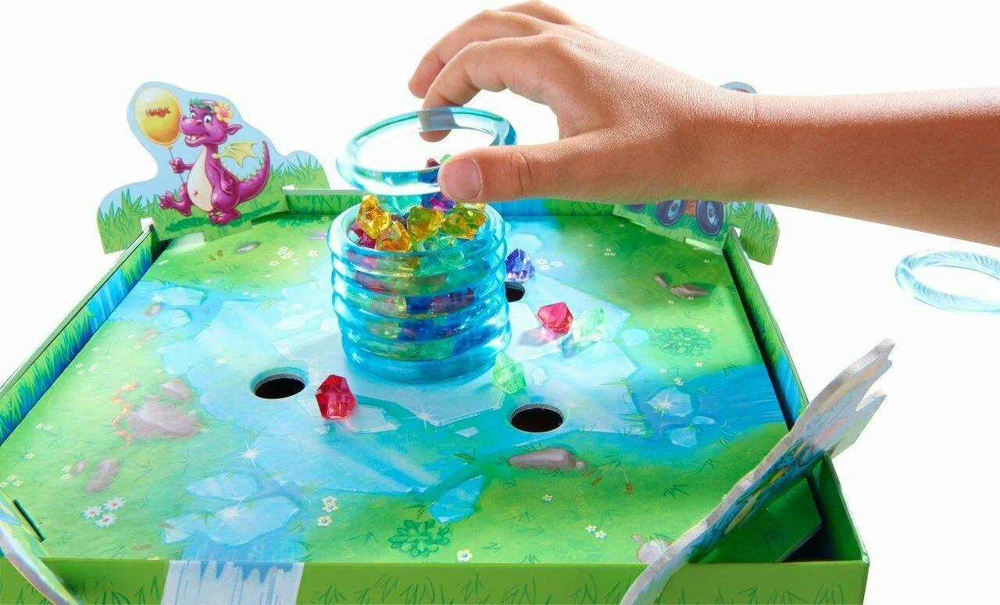
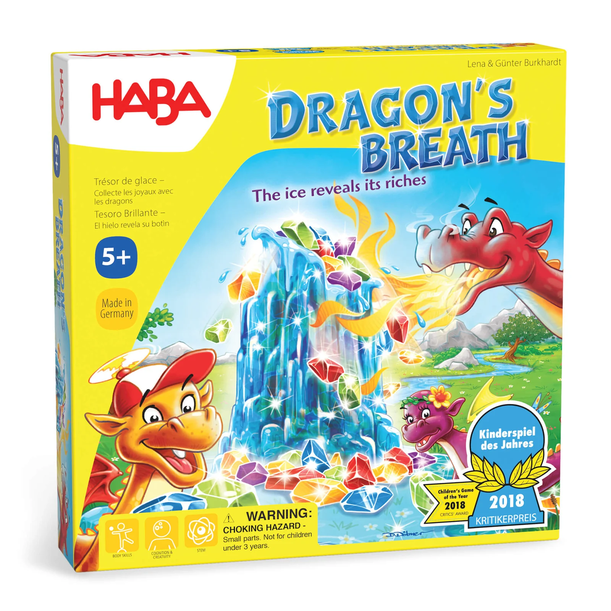

Resumo em 30 segundos
Destaques
- Material que chama a criança
- Regras em três verbos
- A revelação de cada anel
Atenção
- Só por importação
- Escolha quase decorativa
- Mesa só de adultos
1 vitória em prêmios, incluindo Kinderspiel des Jahres 2018 · Kinderspiel des Jahres
Para quem: tem criança de 5 a 7 anos que adora mexer em pecinhas; procura um jogo de 15 minutos que a criança arma quase sozinha.
Como funciona Dragon's Breath
Aposte numa cor, tire um anel da coluna de gelo e guarde as pedras da sua cor que caírem.
- 1
Escolham as cores
A partir da esquerda de quem está com o dragão-pai, cada um pega uma placa de cor. O dragão-pai escolhe por último; em dupla, cada um fica com duas.
- 2
Levante o anel
O dragão-pai tira o anel do topo da coluna tocando só nele. Com cuidado, solta poucas pedras; de uma vez, solta muitas para todo mundo.
- 3
Recolha a sua cor
O dragão-pai recolhe primeiro as pedras da cor dele. Depois os outros, em sentido horário, levam as suas para a caverna atrás do filhote.
- 4
Empurre o resto
Pedras sem dono vão para os buracos do tabuleiro, rumo à caverna do dragão-pai. Ele passa a peça para o próximo jogador, e as placas voltam.
- 5
Conte as pedras
Saiu o último anel, a partida acaba. Pedras em cima da placa de gelo não contam. Quem guardou mais pedras na caverna vence.
Ler as regras completas
Cada jogador controla um filhote de dragão, encaixado num canto do tabuleiro, sobre a caverna onde vai guardar as pedras. No centro fica a placa do bloco de gelo e, em volta dela, uma coluna de anéis transparentes empilhados, cheia com 90 pedras de cinco cores, 18 de cada. Com dois ou quatro jogadores usam-se 8 anéis; com três, os 9. Vence quem tiver mais pedras na caverna no fim.
O jogador da vez fica com o dragão-pai, uma peça de madeira. Primeiro, cada um dos outros escolhe uma das cinco placas de cor, em sentido horário a partir da esquerda dele, e o dragão-pai pega a sua por último. Em partidas de dois, cada jogador fica com duas cores por rodada.
Depois, o dragão-pai levanta o anel do topo com uma ou duas mãos, tocando só nesse anel, e as pedras presas nele caem pelo tabuleiro. Pedras que estavam em cima do anel podem ser empurradas de volta para a coluna. Pedras que caem nos buracos do tabuleiro vão para a caverna do dragão-pai, no fundo da caixa, e saem do jogo.
Na divisão, o dragão-pai recolhe primeiro as pedras soltas da sua cor e as põe na caverna atrás do filhote; os outros fazem o mesmo, em sentido horário. O que sobra no tabuleiro é empurrado para os buracos. O anel tirado sai do jogo, o dragão-pai passa para o próximo jogador e as placas voltam ao centro.
A partida acaba quando o último anel sai. Pedras que ficaram em cima da placa de gelo não contam para ninguém. Cada um conta as pedras da própria caverna, ou as enfileira, como o manual sugere para quem ainda não conta bem, e quem tiver mais vence. Há duas variantes: crianças menores ficam com a mesma cor a partida inteira, e jogadores mais velhos escolhem placas viradas para baixo.
Como é jogar Dragon's Breath
“Este papai dragão não derrete só gelo: derrete também coração de criança.”
júri do Spiel des Jahres (tradução livre)

Na primeira rodada, todo mundo escolhe a cor que mais aparece através do plástico do anel de cima. Eric, do What's Eric Playing?, notou exatamente isso: a mesa pega a placa com mais pedras à vista, e a escolha vira mais sorte que estratégia. Aí o dragão-pai arranca o anel de uma vez, as pedras se espalham, e a criança de 5 anos comemora cada pedra amarela como gol em final de campeonato.
Continuar lendo
Na terceira rodada, alguém descobre a tática que o próprio manual sugere: quem levanta o anel escolheu a cor por último, então o negócio é soltar o mínimo. Você ficou com o verde, que não aparece em lugar nenhum, e os outros apostaram no vermelho que forra o anel. Você ergue o anel devagar, empurra de volta para a coluna as pedras que estavam em cima, e caem três. Nenhuma vermelha. Matt Carlson, do Opinionated Gamers, descreve o mesmo incentivo: o dragão da vez quer deixar cair o mínimo possível.
É o único dragão das histórias infantis que rende mais quanto menos fogo cospe. E tudo o que escorrega pelos buracos vai para a caverna dele, que o manual chama, sem ironia nenhuma, de vencedor secreto.
O que funciona muito bem
Material que chama a criança
Por quê?A coluna de anéis transparentes cheia de pedras coloridas é o que traz a criança para a mesa antes de qualquer explicação. Matt Carlson, do Opinionated Gamers, chama as peças de maravilhosas, e Eric, do What's Eric Playing?, gosta do peso dos anéis e diz que a construção é muito original. A própria caixa vira a base do tabuleiro, com quatro cavernas e uma central.
Regras em três verbos
Por quê?Escolher a cor, levantar o anel, recolher as pedras: a rodada inteira cabe nisso. David McMillan, da Meeple Mountain, conta que a simplicidade deixa o filho de 4 anos competir de igual para igual com os pais, e Robin Brooks, da GeekDad, elogia a montagem fácil para mãos pequenas. A partida dura cerca de 15 minutos, segundo o manual.
A revelação de cada anel
Por quê?Ninguém sabe ao certo o que está preso em cada anel até ele subir. Dale Yu, do Opinionated Gamers, destaca a empolgação da mesa na hora em que as pedras caem, e Robin Brooks, da GeekDad, diz que são justamente as pedras caindo que impedem o jogo de virar obrigação. É a parte que a criança pede para repetir.
Tática do tamanho certo
Por quê?Quem levanta o anel escolhe a cor por último e, pelas regras, pode tirá-lo devagar para soltar poucas pedras ou empurrar de volta as que estavam em cima. O júri do Spiel des Jahres diz que o jogo pede cabeça fria, um pouco de sorte e sensibilidade nos dedos, e Dale Yu, do Opinionated Gamers, fala em um pouco de habilidade e de risco.
Variantes para idades diferentes
Por quê?O manual traz duas. Crianças menores ficam com a mesma cor a partida toda, sem escolher a cada rodada; jogadores mais velhos pegam placas viradas para baixo e só descobrem quem tem cada cor na revelação. David McMillan, da Meeple Mountain, acha que a variante secreta muda pouco o jogo, mas reconhece que acrescenta alguma tensão.
Nada para ler na mesa
Por quê?Durante a partida não existe texto: as placas são só cores, e a contagem final pode ser feita enfileirando as pedras, como o manual sugere para quem ainda não conta bem. Para o leitor brasileiro, isso pesa a favor, porque o manual da edição americana não vem em português e a caixa precisaria ser importada.
Pontos de atenção
Só por importação Grave
Por quê?Não encontramos edição nacional até 11/11/2026, nem oferta em loja brasileira nas buscas. A referência de preço é a loja da HABA nos EUA, a US$ 24,99, e a da Áustria, a 19,99 euros, antes de frete e impostos. Um jogo pensado para o aniversário de 5 anos exige, por aqui, a logística de quem importa peça de carro.
Escolha quase decorativa Moderada
Por quê?Robin Brooks, da GeekDad, acha que a escolha da cor parece quase totalmente arbitrária, e Eric, do What's Eric Playing?, conta que a mesa acaba pegando a placa com mais pedras à vista. A estratégia existe e cabe numa frase: escolha a cor que você está vendo. A criança descobre isso na segunda rodada, o adulto finge que descobriu na quarta.
Mesa só de adultos Moderada
Por quê?Dale Yu, do Opinionated Gamers, conta que o jogo fracassou feio na única partida só com adultos, e Matt Carlson diz que ele não prende jogadores mais velhos. É justo: a caixa diz 5 anos e cumpre. Só não planeje a revanche dos adultos para depois que as crianças forem dormir.
Um anel decide a partida Moderada
Por quê?Matt Carlson, do Opinionated Gamers, nota que algumas partidas se resolvem em um ou dois anéis em que uma cor despenca, e quem tinha aquela placa leva quase tudo. Com só 8 ou 9 anéis por partida, um anel generoso pesa muito no placar, e a conversa sobre tática perde para a sorte.
Destreza tímida Leve
Por quê?A caixa sugere habilidade nos dedos, mas Eric, do What's Eric Playing?, queria que tirar o anel exigisse mais destreza: na prática, muita gente arranca o anel de uma vez e espalha pedras. Ele prefere Valley of the Vikings e ICECOOL, outros vencedores do Kinderspiel em que a mão trêmula faz mais diferença.
Dupla divide a crítica Leve
Por quê?Com dois jogadores, cada um pega duas cores por rodada. Robin Brooks, da GeekDad, acha que é a versão mais fraca; Eric, do What's Eric Playing?, prefere levemente a dupla, porque cada um levanta o anel em mais rodadas. Se o jogo vai ser de um adulto e uma criança, essa é a dúvida que importa.
Legenda para o Instagram
Não colou? Toque em “Compartilhar legenda” e escolha “Copiar”, ou segure o dedo no texto acima.
Para quem é
Perfil do jogo
Com quantos jogar
- 2 jogadores (Bom): Cada um escolhe duas cores por rodada e levanta o anel a cada duas rodadas. A GeekDad acha a versão mais fraca; o What's Eric Playing? prefere levemente.
- 3 jogadores (Ótimo): Única contagem com os 9 anéis. A cada rodada, duas cores ficam sem dono, e as pedras delas acabam na caverna do dragão-pai.
- 4 jogadores (Ótimo): Com 8 anéis e quatro cores em jogo, quase toda pedra que cai tem dono, e a mesa inteira acompanha cada anel levantado.
É para você se…
- Tem criança de 5 a 7 anos que adora mexer em pecinhas
- Procura um jogo de 15 minutos que a criança arma quase sozinha
- Gosta de ver a mesa inteira prender a respiração a cada anel
- Topa importar uma caixa sem texto na partida
- Já jogou Magic Mountain e quer um competitivo do mesmo tamanho
Pense duas vezes se…
- Procura desafio para uma mesa só de adultos
- Quer decisões que pesem mais que a sorte de um anel
- Precisa achar o jogo numa loja brasileira ainda esta semana
- Espera um jogo de destreza de mão tremendo
Dica para a primeira partida
Monte a base da caixa com os quatro divisores antes de chamar as crianças e encha a coluna usando as placas de cor para tapar os buracos, como sugere o manual; depois tire as placas. A explicação leva poucos minutos. O que confunde é a ordem: quem levanta o anel escolhe a cor por último e recolhe primeiro. Com crianças de 5 anos, comece pela variante em que cada um fica com a mesma cor a partida inteira. Dica prática: lembre a regra de consolo do manual, em que quem derruba sem querer a pedra de outro jogador no buraco entrega uma das suas.
Edição nacional e preço
US$ 24,99 (HABA EUA) ou 19,99 euros (HABA Áustria)

Não encontramos edição nacional até 11/11/2026, nem oferta em loja brasileira nas fontes consultadas. Em 11/11/2026, a loja da HABA nos Estados Unidos vendia o jogo por US$ 24,99, e a loja oficial da HABA na Áustria, por 19,99 euros, sem contar frete e impostos de importação. Durante a partida não há texto para ler; o manual da edição americana vem em inglês, chinês, alemão, francês, espanhol e coreano.
Expansões e versões
A HABA lançou depois Dragon's Breath: The Hatching, jogo independente com os mesmos dragões que, segundo a loja britânica Imagination Gaming, pode ser combinado com o original para acrescentar um quinto jogador e regras novas. Versão digital: não confirmado nas fontes consultadas. A caixa do jogo base já traz duas variantes, uma para crianças menores e outra com a escolha de cor em segredo.
Se você gosta de Dragon's Breath…
 Magic MountainOutro Kinderspiel des Jahres em que as peças descem pelo tabuleiro e a mesa acompanha cada lance. É cooperativo: em vez de cada um encher a própria caverna, a família inteira tenta salvar os aprendizes de feiticeiro.Ler a resenha →
Magic MountainOutro Kinderspiel des Jahres em que as peças descem pelo tabuleiro e a mesa acompanha cada lance. É cooperativo: em vez de cada um encher a própria caverna, a família inteira tenta salvar os aprendizes de feiticeiro.Ler a resenha → DragominoTambém tem filhotes de dragão e mira crianças a partir de 5 anos, mas troca a coluna de gelo por dominós de paisagem que revelam ovos. Venceu o Kinderspiel des Jahres 2021 e tem edição nacional.Ler a resenha →
DragominoTambém tem filhotes de dragão e mira crianças a partir de 5 anos, mas troca a coluna de gelo por dominós de paisagem que revelam ovos. Venceu o Kinderspiel des Jahres 2021 e tem edição nacional.Ler a resenha → Cadê o Lobo?Outro premiado para os primeiros jogos, cooperativo e de memória. Serve a quem prefere todo mundo do mesmo lado em vez de cada um torcendo pela própria cor.Ler a resenha →
Cadê o Lobo?Outro premiado para os primeiros jogos, cooperativo e de memória. Serve a quem prefere todo mundo do mesmo lado em vez de cada um torcendo pela própria cor.Ler a resenha →
Veredito: Dragon's Breath vale a pena?
Recomendado com ressalva: só por importaçãoDragon's Breath é um jogo sobre um dragão que cospe fogo, e a melhor jogada é cuspir pouco. A gente acha essa lição sob medida para os 5 anos: sem ninguém explicar, a criança de 5 anos descobre que quem escolhe a cor por último deve soltar poucas pedras. A coluna de anéis cheia de pedras é material de dar inveja, a rodada cabe em três verbos e cada anel levantado prende a mesa. Venceu o Kinderspiel des Jahres 2018. Pesam a sorte que decide partidas em um anel, a graça nula para uma mesa de adultos e a falta de edição nacional: por ora, só importado, a US$ 24,99 na loja americana da HABA. Se você consegue trazer uma caixa de fora e tem um filhote de dragão em casa, compre. Fogo baixo, pedra no bolso.
Quem levanta o anel escolhe a cor por último, e em três rodadas a criança aprende a derreter gelo com toda a calma do mundo.
Conhece alguém que joga Dragon's Breath?
Mande esta resenha para a turma.
Comentários
Ainda não há comentários. Seja a primeira pessoa a comentar.
Continue lendo
Outras resenhas da Elite Boardgamers.
 TapestryEstrategistas
TapestryEstrategistas WatergateJogar a dois
WatergateJogar a dois Mon Puzzle AventureTema e história
Mon Puzzle AventureTema e história Isle of SkyeO próximo passo
Isle of SkyeO próximo passo Bubble StoriesÓtimo sozinho
Bubble StoriesÓtimo sozinho Mysterium KidsCooperativo
Mysterium KidsCooperativo
Gostou da resenha?
A Elite Boardgamers publica resenhas de jogos premiados todos os dias. Entre no grupo para conversar sobre jogos e siga no Instagram.
Perguntas frequentes
Vale a pena comprar Dragon's Breath?
Nosso selo: Recomendado com ressalva. Dragon's Breath é um jogo sobre um dragão que cospe fogo, e a melhor jogada é cuspir pouco. A gente acha essa lição sob medida para os 5 anos: sem ninguém explicar, a criança de 5 anos descobre que quem escolhe a cor por último deve soltar poucas pedras. Ressalva: só por importação.
Para quantos jogadores é Dragon's Breath e quanto tempo dura?
Dragon's Breath é para 2 a 4 jogadores, com duração anunciada de cerca de 15 minutos (manual); 15 a 20 minutos (Meeple Mountain). Na nossa avaliação, funciona melhor com: 3 jogadores, 4 jogadores.
Dragon's Breath tem edição em português?
Não encontramos edição nacional até 11/11/2026, nem oferta em loja brasileira nas fontes consultadas.
Quanto custa Dragon's Breath no Brasil?
Em 11/11/2026, US$ 24,99 (HABA EUA) ou 19,99 euros (HABA Áustria) (edição nacional não encontrada nas fontes consultadas até 11/11/2026; preços sem frete e impostos de importação).
Para quem é Dragon's Breath?
Para quem tem criança de 5 a 7 anos que adora mexer em pecinhas; procura um jogo de 15 minutos que a criança arma quase sozinha; gosta de ver a mesa inteira prender a respiração a cada anel.
Dragon's Breath ganhou prêmios?
Sim: venceu Kinderspiel des Jahres 2018.
Quais jogos são parecidos com Dragon's Breath?
Na resenha comparamos Dragon's Breath com Magic Mountain, Dragomino e Cadê o Lobo?. Magic Mountain: Outro Kinderspiel des Jahres em que as peças descem pelo tabuleiro e a mesa acompanha cada lance.
Fontes (11)
- HABA USA – Dragon's Breath Game ficha, componentes, preço nos EUA, fotos
- HABA USA – manual de Dragon's Breath (PDF) regras, componentes, variantes, idiomas do manual
- HABA Áustria – Dragon's Breath preço na Europa
- Spiel des Jahres – Kinderspiel des Jahres 2018 prêmio, justificativa do júri, indicados
- Wikipedia – Spiel des Jahres lista de vencedores do Kinderspiel
- Meeple Mountain – Dragon's Breath crítica, variantes, ano
- GeekDad – Dragon's Breath crítica, dois jogadores, componentes
- Opinionated Gamers – Dragon's Breath crítica de Matt Carlson e Dale Yu
- What's Eric Playing? – Dragon's Breath crítica, sorte, destreza, dois jogadores
- BoardGameMatcher – Dragon's Breath nota, peso e posição do BGG replicados
- Imagination Gaming – Dragon's Breath: The Hatching continuação combinável com o original
Consulta às fontes em 11/11/2026.